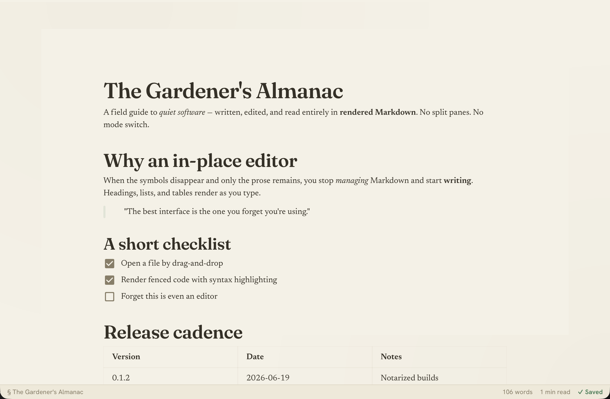
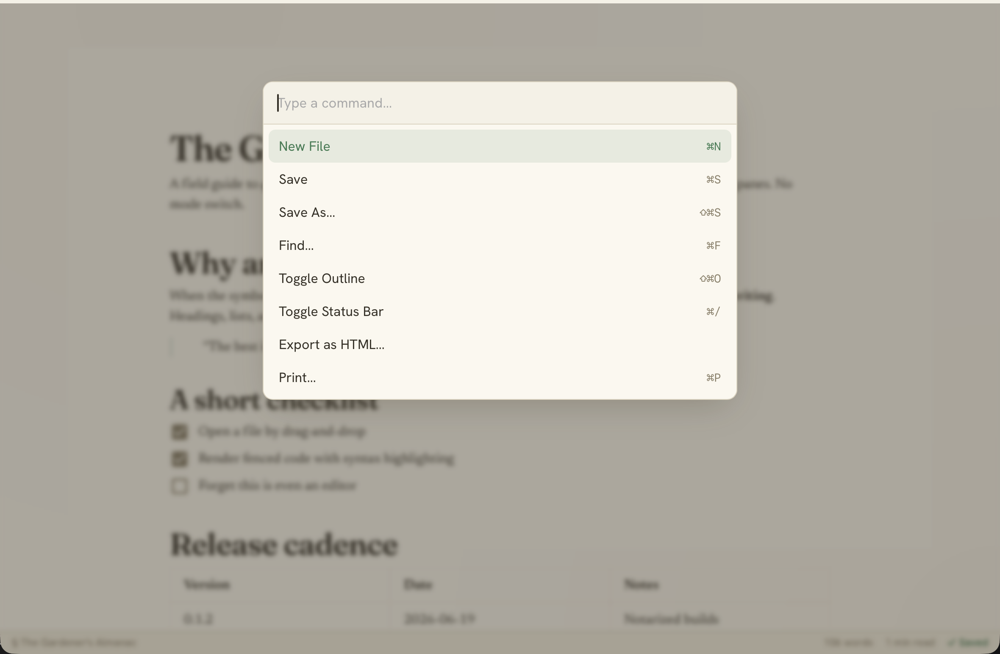
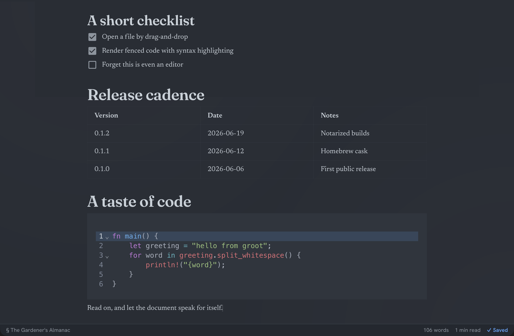

Features
In-place WYSIWYG
Markdown renders as you type — headings, lists, tables, fenced code with syntax highlighting. No raw-symbol mode switching.
Live reload
External changes to the open file are picked up automatically, and ignored while you have unsaved edits.
Outline sidebar
A document outline with scroll-spy (⌘⇧O) to jump around long files.
Command palette
Fuzzy-search and run any command with ⌘K.
Find in document
In-place search (⌘F) that highlights matches as you type.
Export & print
Export clean standalone HTML, or Print / save as PDF — both render without editor chrome.
Themes & typography
Warm paper-cream light and slate dark (or follow the system), in an editorial Fraunces + Newsreader type system.
Menu-bar icon
A macOS status-bar icon with quick actions: Show, New File, Open File…, and Quit.
Open anywhere
Open via the File menu, Open Recent (persisted), or drag-and-drop a .md file onto the window.
Safe editing
Save / Save As / New with unsaved-changes tracking and a close guard that prompts before discarding edits.
A closer look



Install
Install on macOS with Homebrew:
brew install --cask habib-sust/groot/grootgroot is signed with an Apple Developer ID and notarized by Apple, so it launches normally — no Gatekeeper workaround needed. You can also download the .dmg directly.
Build from source
git clone https://github.com/habib-sust/groot.git
cd groot
npm install
npm run tauri dev # launch the app
npm run tauri build # produce a distributable bundleKeyboard shortcuts
| Action | Shortcut |
|---|---|
| Open File | ⌘O |
| New | ⌘N |
| Save | ⌘S |
| Save As | ⌘⇧S |
| Find | ⌘F |
| Toggle Outline | ⌘⇧O |
| Toggle Status Bar | ⌘/ |
| Command Palette | ⌘K |
| ⌘P |